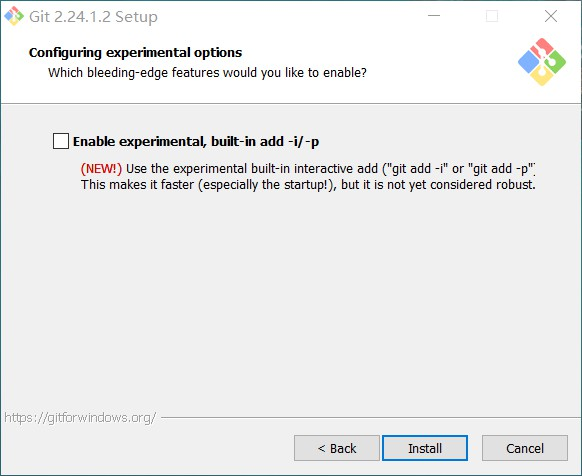
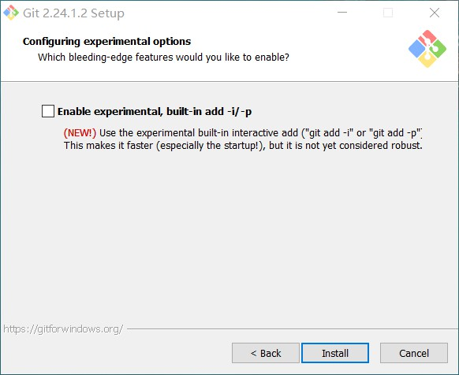
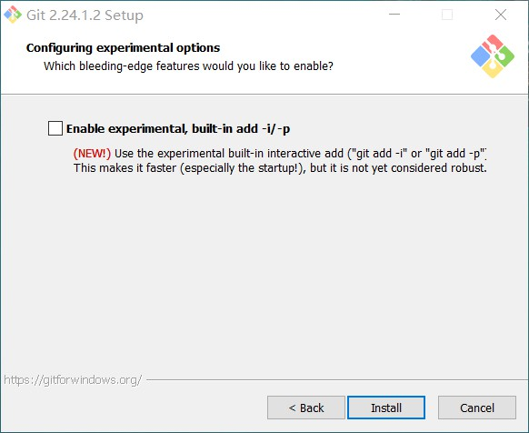
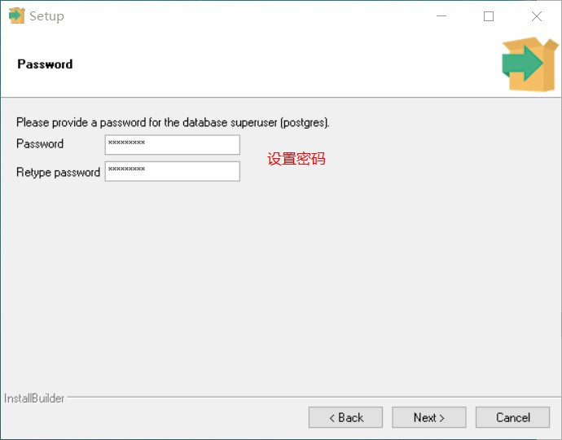
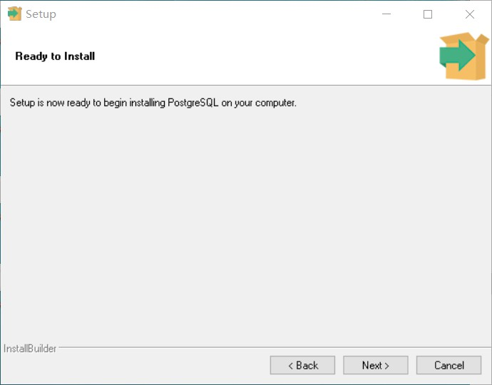

Linux 都自带 Git，Windows 版本点击直接下载
安装环境
安装步骤，一般一路 next 下去就可以了

Git 安装好以后设置用户名和邮箱，这是必须的，不然在第一次 commit 的时候也会要求你设置。
git config --global user.email "you@example.com"
git config --global user.name "your name"
设置完以后可以去用户目录下查看，会生成一个 .gitconfig 文件。
另外，git-bash 中不能运行 windows 控制台程序，比如 python 解释器，需要使用 winpty python 命令。或者在安装目录下的 etc/bash.bashrc 文件中添加 alias python='winpty python' 就可以了。
使用默认方式安装好 Git 之后，Git Bash 中就自带 VIM 和 SSH 功能，就不需要再单独安装这两个了。Git Bash 因为右键可以直接使用，所以不管是使用 VIM 还是 SSH，都是很方便的。
更多内容请移步
http://www.worldhello.net/gotgit/ http://www.worldhello.net/gotgithub/
安装环境
sudo apt update
# 安装依赖
sudo apt install curl gnupg2 ca-certificates lsb-release
# 安装 nginx
sudo apt install nginx
基本命令
sudo nginxsudo nignx -s stopsudo nignx -s quitsudo nignx -s reloadsudo nignx -s stop更多内容请移步
安装环境
打开 控制面板 --> 程序 --> 程序和功能 --> 启用或关闭 Windows 功能，勾选 适用于 Linux 的 Windows 子系统, 然后重启。
打开 Microsoft Store，搜索 Linux ，会出来 Ubuntu、Debian、SUSE Linux Enterprise Server 等，选一个安装就行，大部分都是选择安装 Ubuntu。
也可以直接点击这里
启动，设置用户名和密码
子系统路径
C:\Users\用户名\AppData\Local\Packages\CanonicalGroupLimited.UbuntuonWindows_79rhkp1fndgsc\LocalState\rootfs
更改下载服务器
# 先备份
sudo cp /etc/apt/sources.list /etc/apt/sources_backup.list
# 查看备份成功了没有
ls /etc/apt
# 编辑 sources.list
sudo vim /etc/apt/sources.list
清空内容，替换为以下对应版本中的内容
Ubuntu 14.04
deb https://mirrors.aliyun.com/ubuntu/ trusty main restricted universe multiverse
deb-src https://mirrors.aliyun.com/ubuntu/ trusty main restricted universe multiverse
deb https://mirrors.aliyun.com/ubuntu/ trusty-security main restricted universe multiverse
deb-src https://mirrors.aliyun.com/ubuntu/ trusty-security main restricted universe multiverse
deb https://mirrors.aliyun.com/ubuntu/ trusty-updates main restricted universe multiverse
deb-src https://mirrors.aliyun.com/ubuntu/ trusty-updates main restricted universe multiverse
deb https://mirrors.aliyun.com/ubuntu/ trusty-backports main restricted universe multiverse
deb-src https://mirrors.aliyun.com/ubuntu/ trusty-backports main restricted universe multiverse
## Not recommended
# deb https://mirrors.aliyun.com/ubuntu/ trusty-proposed main restricted universe multiverse
# deb-src https://mirrors.aliyun.com/ubuntu/ trusty-proposed main restricted universe multiverse
ubuntu 16.04
deb http://mirrors.aliyun.com/ubuntu/ xenial main
deb-src http://mirrors.aliyun.com/ubuntu/ xenial main
deb http://mirrors.aliyun.com/ubuntu/ xenial-updates main
deb-src http://mirrors.aliyun.com/ubuntu/ xenial-updates main
deb http://mirrors.aliyun.com/ubuntu/ xenial universe
deb-src http://mirrors.aliyun.com/ubuntu/ xenial universe
deb http://mirrors.aliyun.com/ubuntu/ xenial-updates universe
deb-src http://mirrors.aliyun.com/ubuntu/ xenial-updates universe
deb http://mirrors.aliyun.com/ubuntu/ xenial-security main
deb-src http://mirrors.aliyun.com/ubuntu/ xenial-security main
deb http://mirrors.aliyun.com/ubuntu/ xenial-security universe
deb-src http://mirrors.aliyun.com/ubuntu/ xenial-security universe
ubuntu 18.04
deb http://mirrors.aliyun.com/ubuntu/ bionic main restricted universe multiverse
deb-src http://mirrors.aliyun.com/ubuntu/ bionic main restricted universe multiverse
deb http://mirrors.aliyun.com/ubuntu/ bionic-security main restricted universe multiverse
deb-src http://mirrors.aliyun.com/ubuntu/ bionic-security main restricted universe multiverse
deb http://mirrors.aliyun.com/ubuntu/ bionic-updates main restricted universe multiverse
deb-src http://mirrors.aliyun.com/ubuntu/ bionic-updates main restricted universe multiverse
deb http://mirrors.aliyun.com/ubuntu/ bionic-proposed main restricted universe multiverse
deb-src http://mirrors.aliyun.com/ubuntu/ bionic-proposed main restricted universe multiverse
deb http://mirrors.aliyun.com/ubuntu/ bionic-backports main restricted universe multiverse
deb-src http://mirrors.aliyun.com/ubuntu/ bionic-backports main restricted universe multiverse
安装环境
sudo apt install postgresql
安装环境:
下载安装包， 安装过程如下（版本 11.5）:



安装环境
下载地址，选择 Windows x86-64 executable installer 或 Windows x86 executable installer 进行下载，一个是 64 位的，一个是 32 位的，根据你的系统选择。
安装步骤，第一步的时候勾选 Add Python 3.x to PATH
安装完成后更换 pip 下载源，这里使用阿里云，找到 C:\Users\用户名\AppData\Roaming\pip\pip.ini 文件，没有的话新建一个。
替换为以下内容即可
[global]
index-url = https://mirrors.aliyun.com/pypi/simple/
[install]
trusted-host=mirrors.aliyun.com
或者使用命令
pip config set global.index-url https://pypi.tuna.tsinghua.edu.cn/simple
linux 下的配置文件是
~/.pip/pip.conf